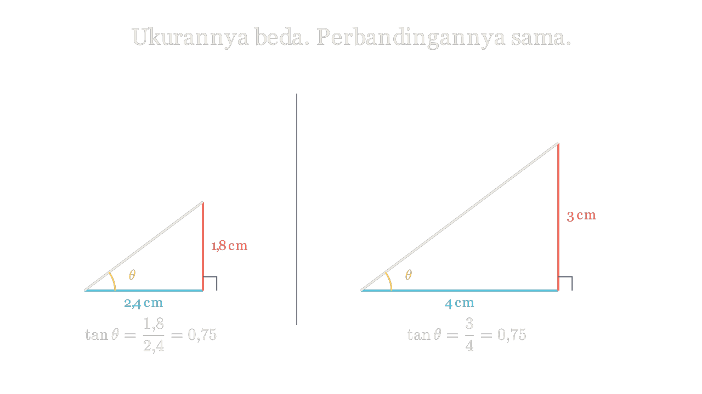

Kenapa sudut yang sama selalu memberi angka yang sama — sebesar apa pun segitiganya?

▶
0:29 / 0:48
Yang biasanya salah dipahami
Kebanyakan siswa menghafal tan 37° ≈ 0,75 seperti menghafal
nomor telepon — sebuah angka mati yang keluar dari kalkulator. Padahal itu bukan angka mati.
Itu perbandingan: sisi depan dibagi sisi samping.
“Siswa perlu membuktikan bahwa sinus dan cosinus suatu sudut berupa rasio,
bukan nilai tetap.” — Buku Panduan Guru Matematika Kelas X, Bab 4
Dan justru karena ia perbandingan, nilainya tidak peduli seberapa besar segitiganya.
Itulah alasan kalkulator sanggup menjawab tanpa pernah tahu segitiga mana yang Anda maksud.
Buktikan sendiri
sisi depan—
sisi samping—
tan θ
—
Tiga perbandingan itu
sin θ = depan / miring
cos θ = samping / miring
tan θ = depan / samping
Latihan
Tiang 6 m, bayangan 8 m. Berapa tan sudut elevasinya?
tan θ = 0,75 dan miring 10 cm. Cari kedua sisi lainnya.
Buktikan sin θ = cos(90° − θ).
Dua tangga bersandar dengan sudut sama. Mana yang lebih panjang?
Uji paham
Delapan soal. Nilai langsung terlihat. Kalau salah,
ditunjukkan letak kelirunya — bukan cuma dicoret.
Belajar lebih lanjut
▶ Perbandingan trigonometri — 14 menit
▶ Sudut istimewa tanpa hafalan — 9 menit
Tautan ke kanal asli. Kami tidak mengunggah ulang.